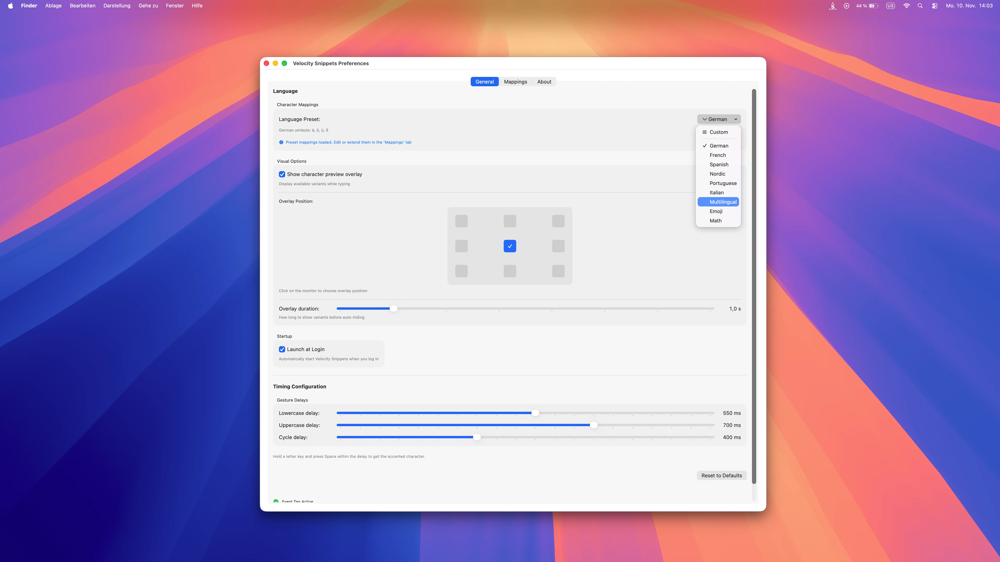
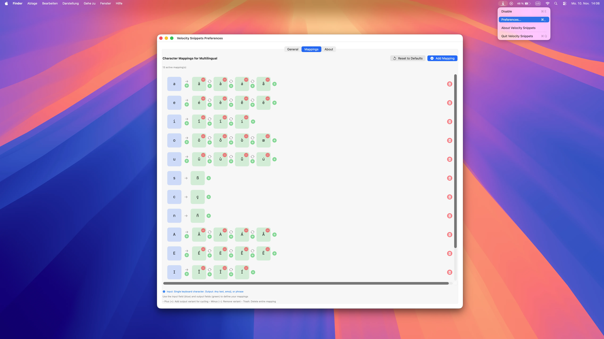
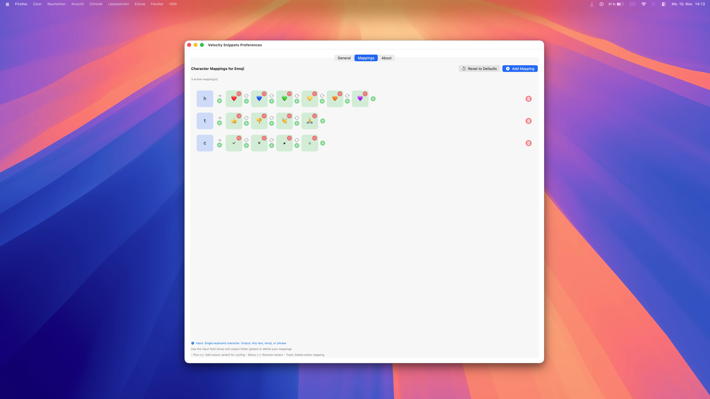
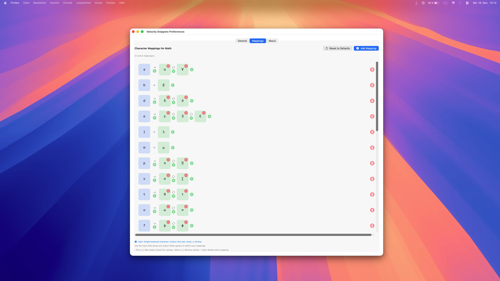
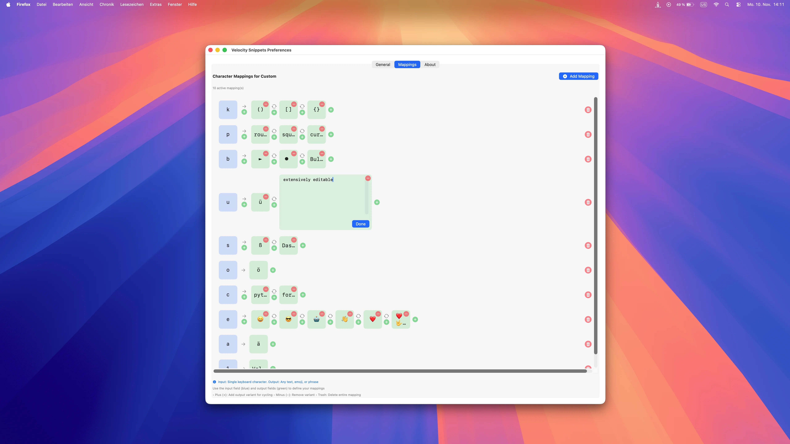

Velocity Snippets
Intelligente Text-Expansion für macOS
Erweitere Text so schnell wie du denkst. Akzente, Snippets, Emojis, Symbole – alles per Geste. Quick Accent Alternative mit unbegrenzter Text-Expansion für macOS. Kein Tastaturwechsel nötig.
In Aktion erleben – Echtzeit-Performance
Warum Velocity Snippets?
Keine Verzögerung
Zeichen erscheinen sofort ohne Verzögerung. Keine Zwischenablage-Manipulation, nur pure Geschwindigkeit.
Presets + Custom
Fertige Presets für sofortigen Start. Alle individuell anpassbar oder komplett eigene Mappings erstellen.
Verbesserte Quick Accent Geste
Taste halten + aktivieren, verbessert für maximale Geschwindigkeit und natürlichen Schreibfluss.
Eigene Mappings
Absolute Freiheit – erstelle Mappings für alles was du willst. Zeichen, Symbole, Emojis, Snippets mit Cycling-Unterstützung.
Drag & Drop Editor
Erstelle und organisiere Snippets per Drag & Drop. Keine komplizierte Konfiguration – einfach ziehen, ablegen, fertig.
Visuelles Overlay
Sehe Cycling-Varianten während des Tippens mit anpassbarer Position.
Universelle Unterstützung
Funktioniert in allen macOS Apps - Safari, Terminal, VS Code, Office und mehr.
Accents inklusive
Alle Features von Velocity Accents sind enthalten – plus unbegrenzte Snippets, Emojis und komplexe Text-Expansion.
Pro App konfigurierbar
Weise Presets einzelnen Apps zu – Mappings wechseln automatisch mit dem Programmfokus.
App-Filter
Whitelist oder Blacklist – du entscheidest, wo Velocity Snippets aktiv ist und wo nicht.
Einfach zu bedienen, mächtig zu meistern
Simple Einstellungen, unendliche Möglichkeiten

Voreingestellte Mappings
Wähle aus 10+ Sprachen und Presets

Mehrsprachig
Deutsch, Französisch, Spanisch & mehr

Emoji Support
Schneller Zugriff auf Herzen, Smileys & mehr

Mathematik-Symbole
Tippe π, α, β, √, ∫ sofort
↓ Scrolle nach unten für mehr Features ↓
Erlebe die Power
Velocity Snippets live während des Tippens
Emoji in Aktion
Schnelle Emojis während des Tippens
Mathe-Symbole Live
Mathematische Zeichen sofort verfügbar
Spanisch in Aktion
Akzente erscheinen sofort beim Tippen

Eigene Mappings
Erstelle deine eigenen Shortcuts und Cycling
↓ Scrolle nach unten um mehr zu sehen ↓
Häufig gestellte Fragen
Velocity Snippets nutzt die gleiche intuitive Geste wie Velocity Accents:
- Halte eine Taste gedrückt (z.B. 'h' für Herz-Emojis oder eigene Mappings)
- Drücke die Aktivierungstaste (Space oder konfigurierte Pfeiltaste) - das Overlay erscheint
- Drücke die Aktivierungstaste mehrmals, um durch die Varianten zu cyclen (❤ → 💙 → 💚 → 💛)
- Optional: Nutze die Pfeiltasten zur direkten Auswahl
- Lasse die Taste los, wenn du den gewünschten Snippet siehst
Das Cycling macht es blitzschnell - egal ob einzelne Zeichen, Emojis oder mehrzeilige Text-Snippets!
Velocity Snippets unterstützt alles - ohne Limits:
- Vorkonfigurierte Presets: 10+ Sprachen (Deutsch, Französisch, Spanisch, Nordisch, Portugiesisch, Italienisch, etc.), Emojis, Mathematik-Symbole
- Eigene Presets: Erstelle komplett eigene Mappings für jede Taste - einzelne Zeichen, Wörter, Sätze, Code-Snippets, mehrzeilige Texte
- Kombinierbar: Nutze vorkonfigurierte Presets und erweitere sie mit eigenen Mappings
- Unbegrenzt: Keine Beschränkung bei Anzahl oder Länge der Snippets
Von einzelnen Akzenten bis zu komplexen Code-Templates - du entscheidest!
Ja! Velocity Snippets funktioniert systemweit in allen macOS Apps - Safari, Mail, TextEdit, Terminal, VS Code, Xcode, Office, Slack und mehr.
Plus App-Filter für maximale Kontrolle:
- Whitelist-Modus: Velocity Snippets ist nur in ausgewählten Apps aktiv
- Blacklist-Modus: Velocity Snippets ist überall aktiv, außer in ausgewählten Apps
- Perfekt um Konflikte mit Passwort-Managern oder Spielen zu vermeiden
Du entscheidest präzise, wo Velocity Snippets arbeitet und wo nicht.
Nein! Velocity Snippets funktioniert sofort nach der Installation mit sinnvollen Standardeinstellungen.
Optionale Anpassungen für Power-User:
- Preset-Zuordnung pro App: Weise verschiedenen Apps automatisch unterschiedliche Presets zu (z.B. Code-Snippets für VS Code, Emojis für Slack)
- Aktivierungstaste: Wähle Space oder Pfeiltasten als Aktivierungstaste
- Gesture Delay: Passe die Verzögerung an deinen Tipp-Stil an
- Overlay-Position: Platziere das Overlay dort, wo es am besten passt
Starte sofort oder passe alles bis ins kleinste Detail an - deine Wahl!
Velocity Snippets kommt mit 10+ sofort nutzbaren Presets:
- Sprachen: Deutsch, Französisch, Spanisch, Nordisch, Portugiesisch, Italienisch und mehr
- Emojis: Herzen, Smileys, Hände, Pfeile - häufig genutzte Emojis sofort verfügbar
- Mathematik: π, α, β, √, ∫, ≤, ≥, ± und weitere Symbole
- Anpassbar: Alle Presets können individuell bearbeitet werden
- Eigene Presets: Erstelle komplett neue Presets von Grund auf
Perfekt für sofortigen Start mit der Option, alles nach deinen Bedürfnissen anzupassen.
Beim sehr schnellen Tippen kann es vorkommen, dass versehentlich Snippets eingefügt werden - nämlich dann, wenn eine Taste noch gedrückt ist, während die Space-Taste gedrückt wird.
Lösung: Passe die Gesture Delay Zeit in den Einstellungen individuell an:
- Häufige Fehltipps beim schnellen Tippen: Verringere die Verzögerung
- Keine Snippets erzeugt (langsames Tippen): Erhöhe die Verzögerung
- Finde deine persönliche optimale Balance zwischen Geschwindigkeit und Präzision
Die anpassbare Delay-Zeit macht Velocity Snippets für jeden Tipp-Stil optimierbar.
Velocity Snippets erhalten
Einmaliger Kauf • Kostenlose Updates bis Version 2 • Kein Abo
Jetzt kaufen - $4.99✓ Apple notarisiert • Sicher installieren
Systemanforderungen
- macOS 14.0 (Sonoma) oder neuer
- Apple Silicon oder Intel Mac
- Bedienungshilfen-Berechtigung (einmalige Einrichtung)
- Funktioniert mit allen Tastatur-Layouts
Schnelle Einrichtung
- DMG-Datei herunterladen und öffnen
- In den Programme-Ordner ziehen
- Starten und Berechtigungen erteilen
- App startet automatisch
- Jetzt loslegen!